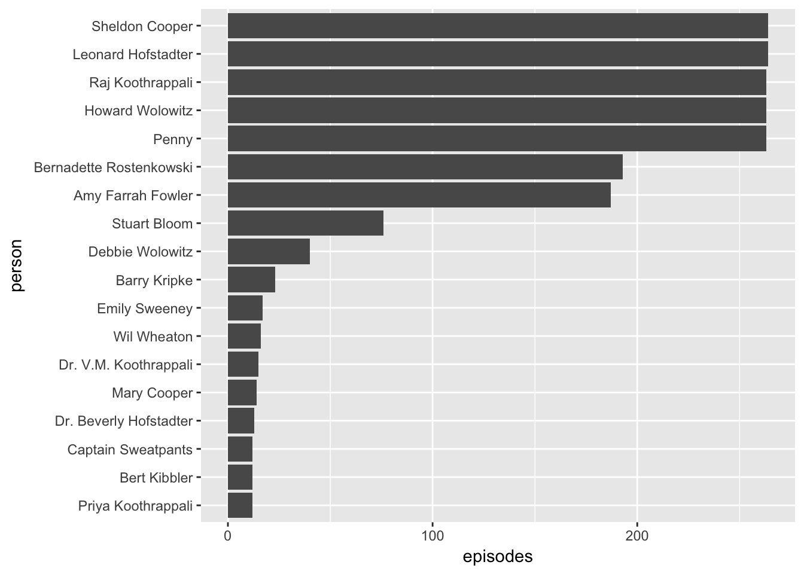

5.1 Yay
library(tidyverse)
bbt <- read_csv("static/data/BTT.csv")
bbt %>%
filter(episodes > 10) %>%
pander::pander()| actor | person | episodes | start_year | end_year |
|---|---|---|---|---|
| Johnny Galecki | Leonard Hofstadter | 264 | 2006 | 2018 |
| Jim Parsons | Sheldon Cooper | 264 | 2006 | 2018 |
| Kaley Cuoco | Penny | 263 | 2007 | 2018 |
| Simon Helberg | Howard Wolowitz | 263 | 2007 | 2018 |
| Kunal Nayyar | Raj Koothrappali | 263 | 2007 | 2018 |
| Melissa Rauch | Bernadette Rostenkowski | 193 | 2009 | 2018 |
| Mayim Bialik | Amy Farrah Fowler | 187 | 2010 | 2018 |
| Kevin Sussman | Stuart Bloom | 76 | 2009 | 2018 |
| Carol Ann Susi | Debbie Wolowitz | 40 | 2007 | 2017 |
| John Ross Bowie | Barry Kripke | 23 | 2009 | 2018 |
| Laura Spencer | Emily Sweeney | 17 | 2014 | 2017 |
| Wil Wheaton | Wil Wheaton | 16 | 2009 | 2018 |
| Brian George | Dr. V.M. Koothrappali | 15 | 2007 | 2018 |
| Laurie Metcalf | Mary Cooper | 14 | 2007 | 2018 |
| Christine Baranski | Dr. Beverly Hofstadter | 13 | 2009 | 2018 |
| Aarti Mann | Priya Koothrappali | 12 | 2010 | 2011 |
| Brian Posehn | Bert Kibbler | 12 | 2013 | 2018 |
| Ian Scott Rudolph | Captain Sweatpants | 12 | 2009 | 2014 |
bbt %>%
filter(episodes > 10) %>%
arrange(episodes) %>%
mutate(person = factor(person, unique(person))) %>%
ggplot(aes(x = person, y = episodes)) +
geom_col() +
coord_flip()